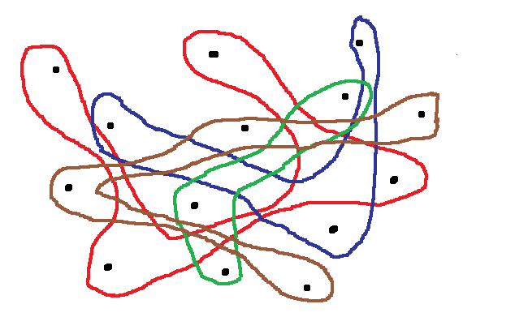
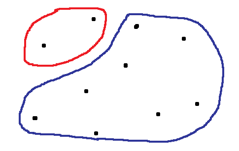
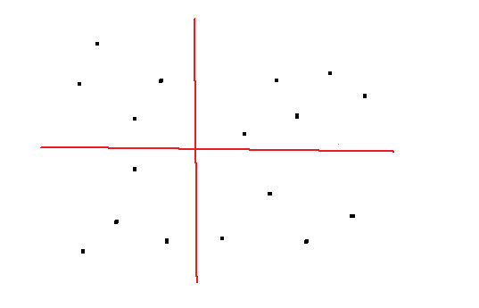
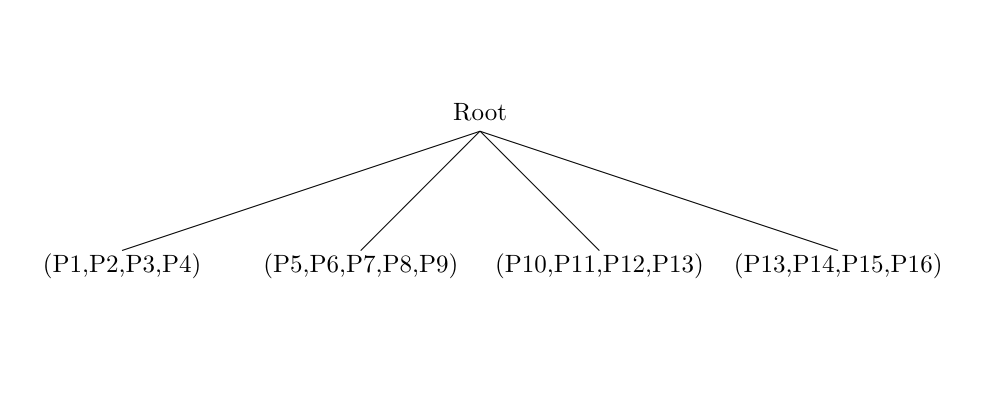
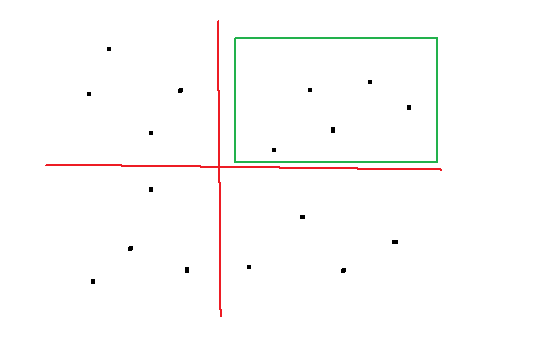
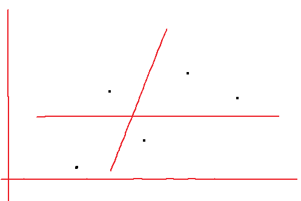
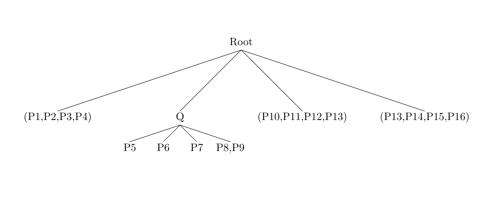
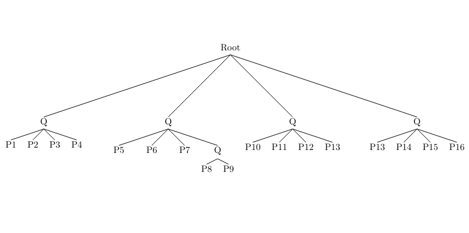
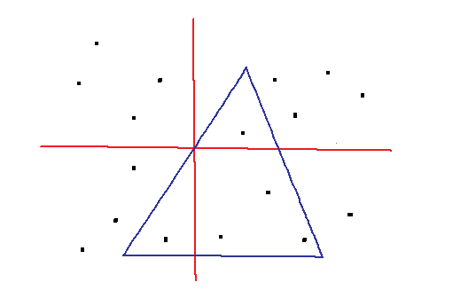
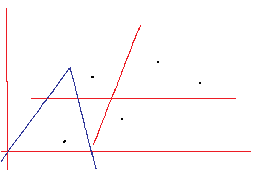

This page present D. E. Willard algorithm used to count the number of points inside a triangle
The goal is to find the number of points inside a polygon. For our case, we will just look at triangle. A good remark could be "Why do we need simplex range counting when we can simply check if a point is inside a triangle by using, for example, angles.". In fact, it could be however most applications call for querying the same point several time. For our game, for example, we need to check a lot of triangle to determine which triangle has the most points inside. Thus in these cases, we would like to answer a faster query . A big solution is preprocessing into data structure : cuttings, partition trees, simplicial partitions, multi-level data structures, etc... In this lecture, we will present a linear algorithm in a friendly way. We are going to present the Simplex Range Searching, more specifically, the one using linear data size presented by D. E. Willard
First of all, we will introduce the main concept. As it's easier to explain with half-planes and we will need it later, we will show it. After that it will be quite easy to transpose it with triangles. Indeed, we can see each edge as a line cutting our plane in 2 spaces.
Thus our goal is to calculate the point number of a plane side. Except that we want an efficient way that allow us querying on a lot of possibilities. So a good way to increase the efficiency is to do some pre-processing. Pre-processing is a piece of code used to sort our datas into some data-structure to get advantages. In our case, we are going to use partition trees. Why ? Because the space is linear and we can reach all points easily in LOG(n). Indeed, each point is stored only one time in the leaf of the tree and the search in partites tree is done in log time.
But now the question is how can be sorted our points in this tree. We will sort by subset of points. However this subsets must have 2 characteristics: the number of points in each subset must be substantially the same and the subset must take a set of points close to each other. Recursivily, we will perform the same move into the first level subset until the subsets contain only 1 point.
Now we have our partition tree. We are going to take a random line, then the algorithm will look which subsets are crossed by this line. There are 2 cases: first one, the subset is not crossed so all the points in this subset are either in or either out. Second one, subset is crossed, so we need to go deeper in the partition tree and do the same again which is the level below.
Now, we have the main idea, we show 2 images explaining why the characteristics defined above are important
In most cases, when we draw a line, the line cross all the subset. There is therefore no subset where there is no need to compute. We want subset such that the line cross only some sub-spaces in such a way that we don't need to compute uncrossed sub-space and can say directly if it's in or out
Now the line cross only the blue part. Even if we reduce the computation of 2, majority of points are still in the computation face. What we want is that the number of points not calculated when a sub-space is not crossed, is not governed by randomness but is constant through the different possibilities of cutting the plan. Otherwise the data-structure is useless for some possibility
In our algorithm, we will split our space in 4 parts. We are going to use 2 lines for the splitting. As we work with 4 spaces each time, our tree will be a 4-way tree. More specifically, there are 2 types of nodes. Leaf nodes that only store a point and intermediare nodes that store the 2 cutting lines, the number of leaf under him and a reference to his 4 children. Little specification : At the leaf level, our partition tree will have maximum 4 children and at least 1 child. We need a efficient algorithm to find our splitting lines. For that, we based ourself on the ham-sandwich theorem. (here a nice video explaining the theorem).
However the biggest difference from the general idea seen above is that we will work with triangle. That mean that we check for space intersection with a triangle.
As seen before and as it is our purpose, the space complexity is linear because we only use a partition tree and none other structure to store twice our points.
Time:
When we talk about time complexity, we usually use the notation "O()". We always calculate our complexity in the worst case. We also forgot the numeric part. So for example if our complexity is O(3/2N) we only note O(N).
First of all, let see the pre-processing, the only cost is the splitting our space in 4 sub-spaces. There exist an algorithm (in 2 dimensions) that is able to find the split in O(N). And like did the quicksort, we recursively do the same. Thus, the time complexity of the tree is O(N log(N))
Then, we calculate the time for a query on a triangle. In the normal case, without use the partition tree, we determine the number of points in O(N) because we will check for each point if it is in or out and there are n points.
For the half-plane, the time complexity go down to O(N α) where α is defined like LOG3(4). Why ? We have to remark that a half-plane can not cross all 4 sub-spaces. And in the worst case, the half-plane will cross 3 sub-spaces. So on each step, we work maximally with 3 sub-spaces. Thus, the 4 in the log is the number of sub-spaces and the 3 is the maximum of space crossed. Now let consider triangles, the complexity become O(N α + k). I recall that we can see triangle as 3 half-planes(but delimited). But we need to add a case when a sub-space is crossed by 2 lines, that's why we have the + k and k is egual to the number of sub-spaces on the same level.
We have a set of points S
We split it into 4 spaces with 2 lines. We can see the resulting tree on the right.
 We perform the same move recusrsively, focusing on the green rectangle.
Again we find our 2 cutting lines and should get this resulting tree.
 So on, in each subspace until our points are sorted. We should get the following partition tree:
Now we have our partition tree builded. We can start the querying. However, as said above, we want to do it with triangles instead of half-planes. It is exactly the same algorithm with just a little adapt to see the cutting of subspaces with triangles
There is a example with 1 triangle.
We want to know how many points are inside this triangle. As explained above, we need to see which spaces are touched by the triangle. And recusively we do it again until we step on a leaf and compute if needed. If we are lucky some parts are not crossed and we not need to compute it. We just need to see if the space is inside or outside.
Now let take the space top-right as the last time:
Again we are lucky, not need to compute the 2 right parts. The 2 left parts need to be recursively look at. But that are leafs, so we just need to look if it is inside or outside. So on until all spaces has been computed and the number of points inside is found.
Agarwal, Pankaj K. “Simplex Range Searching and Its Variants: A Review.” A Journey Through Discrete Mathematics. Cham: Springer International Publishing, 2017. 1–30. Web.
D. E. Willard, Polygon retrieval, SIAM J. Comput., 11 (1982), 149–165.
Lo, Chi-Yuan, J. Matoušek, and W. Steiger. “Algorithms for Ham-Sandwich Cuts.” Discrete & computational geometry 11.4 (1994): 433–452. Web.
The game consist to find the triangle containing the most point.
Click on the bouton "Next" to start the gameNice guess ! Now it show all possible solution !
Shame ! That is/are the possibles solutions
Try again !
You didn't choose 3 points to form a triangle !